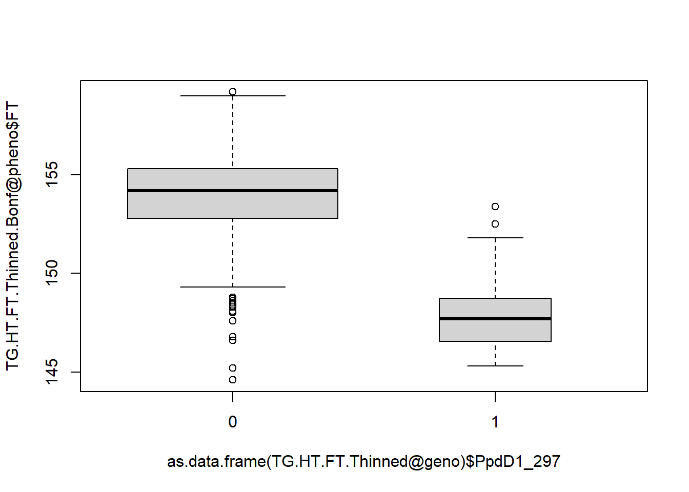

Chapter 9 Association Mapping.
9.1 Introduction
Association Mapping with GWASpoly
We are going to use the R package GWASpoly to carry out association mapping using the mixed model. We shall analyse the TriticeaeGenome data set which we have used previously in this course. To recap: it was a European collaborative project which developed a panel of 384 UK, French and German winter wheat varieties. Here we are going to use the variety means across trials for a range of phenotypes together with a genome-wide set of DArT markers for association mapping.
GWASpoly is an R package from the Endelman group in the University of Wisconsin. The group is more noted for the well-established package rrBLUP for genomic prediction. You can see the group’s software on their website. The installation process for GWASpoly has recently changed. You use to be able to download from their website. However, the package is now hosted on GitHub. If you carry on working with R you will find that a number of packages are hosted on GitHub. The only real difference between a package hosted on Github and through CRAN that we need to worry about for now is the installation process. install.packages() will not work in this case. Instead we will use the devtools package to install from Github:
#install devtools
install.packages("devtools")
#use devtools function to install from Github
# you may be asked to update some packages, just follow the promts in the console
devtools::install_github("jendelman/GWASpoly")That should of installed GWASpoly and all the required associated packages. We should load the package and test it’s installed ok (there should be no error messages):
library(GWASpoly)GWASpoly is relatively straightforward to use. Its unique selling point is that it works on autopolyploid crops too. For these, the form of the kinship matrix changes, and this is accounted for. The main weakness of GWASpoly is that is can only handle bi-allelic markers, thus making it less useful for haplotype analysis. Several other GWAS packages are available for use in plants, notably TASSEL and GAPIT (http://www.zzlab.net/GAPIT/), both originally developed in the Buckler lab at Cornell. More recently, the authors of GAPIT have released an improvement over GAPIT called FarmCPU, which incorporates recent methodological advances to reduce the number of false negatives which occur as a result of the adjustment for kinship and population structure. GAPIT and FarmCPU are both R packages.
For GWASpoly, there is a vignette available here, which is worth reading at some stage.
9.2 Preparing the data set
The complete TG data set is found in the file “TG data for GWAS.poly.xlsx.” For reading into GWASpoly, two data files are required: a phenotype file and a genotype file which includes map co-ordinates. Here, phenotype data are in the file “TG_phens.csv.” The first column must be the accession names. The next set of columns contains data on the traits to be analysed. There is then an optional final set of columns which gives covariates to be included in the analysis. In the TriticeaeGenome data there are six covariates:
- PCR marker for the Rht2 dwarfing allele
- PCR marker for the Ppd flowering time insensitivity allele
- Year of registration of the variety
- Country of variety origin (DEU, FRA, GBR)
- 2 columns for country 0/1 “DEU,” “FRA”
Genotype data for the GWAS are in the file “TGgeno.csv.” Data here are DArT markers, coded 0/1(this is a data set of inbred lines). The data are transposed compared to the phenotypic data: variety names are in the first row rather than the first column. The first column here is the marker name, the second the chromosome number and the third the position of the marker in cM. As this is wheat, the chromosomes are numbered consecutively 1…21 for chromosomes 1A, 1B, 1D,2A, 2B…, 7B, 7D , Chromosome 22 is of SNPs provided by BioGemma. Chromosome 23 is of unmapped DArT markers, and chromosome 24 is a small number of diagnostic markers for known QTL. Subsequent columns contain the marker data.
In preparing the data for analysis, markers with a minor allele frequency (maf) <4% were deleted. Most association mapping studies delete loci with low maf as they are unlikely, on their own, to detect any association, even if they are functional. The threshold is somewhat subjective. In the current case, <4% means less than 15 copies of the rare allele, which seems reasonable: think of doing a t-test where one group has fewer than 15 samples. The package itself, however, sets the minimum maf for inclusion in the analysis to 0.05, so we shall work with that. The maf threshold can be changed, however. Markers with >10% missing data were also deleted, as they are likely to be of poor quality.
The sheet “TGkin” contains a subset of the markers to use for kinship calculation. Markers are frequently unevenly distributed across plant genomes. If kinship matrices are dominated by dense clusters of markers, then any operations upon these matrices, such as PCO and tree construction, will be biased towards these markers. So a tree, for example, will not necessarily reflect average relationships over the genome, but the relationships among varieties in the genomic regions which have the highest number of markers. This is particularly a problem if, as is often the case, the dense clusters of markers are also in high LD. Such clusters are frequently found in crop species where non-recombining genomic regions from related species have been introgressed by plant breeders. For this reason, it is good practice to thin the markers to give a more uniform distribution over the whole genome. One way of doing this is to calculate the correlation coefficient among all markers and delete one marker of each pair in high LD (say r>0.9). Another is to delete markers if they are too closely linked. There is a fine balancing act in thinning markers. If markers are not uniformly distributed over the genome, then marker-trait associations will be over-corrected in some parts of the genome and under-corrected in others. If too few markers are left, then kinship will not be accurately estimated and adjusted for. For our data, we shall use only the mapped markers for kinship estimation, deleting all but one of any markers which map to the same position. This left 1,044 markers (from 2686 before thinning) selected for kinship calculation.
For some reason, no packages we are aware of provide this option of thinning markers selectively by correlation coefficient or by map position, despite the necessity of doing so. There are exceptions: Speed et al. (2012) developed an approach to calculating a kinship matrix which takes into account the clustering of markers without the need for thinning markers.
9.3 Running GWASpoly
The command to read in the data is read.GWASpoly(). Various data formats are available. Markers can be coded in AB format (common in linkage analysis), as ACGT nucleotides, or numeric; 0, 1, 2, 3, 4 for a tetraploid for instance. As this is an R package, missing data are coded as NA. GWASpoly only works with SNPs or binary markers. To analyse SSRs or haplotype data, each allele could be tested for association independently, possibly with some amalgamation of the results at the end, but this is an unnecessary complication for demonstration purposes. If you have a haplotype data set, using TASSEL is a better option.
Read in the data as follows. In my current working directory I have a subfolder called data, where all the data files are kept. Therefore, I start each file name with “data/,” you will need to take this out if you copy the below:
TGall<-read.GWASpoly(ploidy=1,"data/TGphens.csv","data/TGgeno.csv","numeric",n.traits=18,delim=",")## Number of polymorphic markers: 2686
## Missing marker data imputed with population mode
## N = 376 individuals with phenotypic and genotypic information
## Detected following fixed effects:
## Rht2_400
## PpdD1_297
## YEAR
## COUNTRY
## FRA
## DEU
## Detected following traits:
## YLD_ALL_BLUP
## CALLOW_2011
## FRANCE_2010
## FRANCE_2011
## LGE_2010
## LGE_2011
## NIAB_2011
## FT
## HT
## AWNS
## EARS_M2
## LODG
## MAT
## PROT
## SP_WT
## TGW
## TILLERS
## WINT_KILLOnce again, we are treating inbred wheat lines as haploids here as also reflected in the numerically coded data, where we have 0 or 1 copy of an allele. Note that we had to declare the number of traits. The extra columns in the input file will be considered (correctly) as covariates in the analysis by GWASpoly. Finally we have declared the field separator to be a ‘,’ as we are reading a csv file. For other options use help.
On reading in the data you will see a summary of the data structure, now all stored in TGall. Notice that the output says Missing marker data imputed with population mode. We had some missing marker data but GWASpoly requires complete data so has imputed the missing values on data input using “population mode.” This substitutes missing data by the most frequent genotype class at each marker. This is not the best method. Ideally, we would impute missing data by a more accurate method prior to analysis (see the imputation tutorial).
We also need to read in the version of the data with just the markers required for kinship calculation.
#take out the "data/" if you copy
TGkin<-read.GWASpoly(ploidy=1,"data/TGphens.csv","data/TGkin.csv","numeric",n.traits=18,delim=",")Note, we have 1044 markers in the kinship dataset.
9.4 The exercise
The aim of the exercise is to familiarise yourselves with the package and compare the results obtained when:
- Using different kinship adjustments, or without including kinship at all
- Including known trait covariates (e.g. Rht, Ppd loci)
- Using different population structure adjustments, or without including population structure at all.
9.4.1 Calculation and comparison of kinship
To estimate kinship in GWASpoly, we simply type:
TGall<-set.K(TGall)
TGkin<-set.K(TGkin) Each version of the data has now had a kinship matrix calculated from its associated marker set. We’ll see later how to specify different kinship matrices to be used. There are multiple forms of kinship matrices. GWASpoly centres each marker (so the mean of each marker is zero and the variance is one). If the centred data are in a matrix M, the kinship matrix is then MMt. The kinship matrix is also scaled so that the mean of the diagonal elements are one. This is the VanRaden kinship matrix (VanRaden 2008), which is in common use. Alternatively, you can supply your own matrix (we’ll see how shortly). MtM/n would be the variance/covariance matrix among the n markers if M was centred, and would be the correlation matrix if each marker was initially adjusted to have a variance of one too.
The kinship matrix is stored in a ‘slot’ in the GWASpoly object storing the data. Slots are accessed using @ just as named vectors of data accessed using $ Thus:
TGall@K[1:5,1:5]## AARDEN AARDVARK ABELE ABO ACCESS
## AARDEN 0.89425094 0.06820056 -0.08325033 -0.17401122 0.1904552
## AARDVARK 0.06820056 0.98608975 0.04025471 -0.03429426 -0.0102782
## ABELE -0.08325033 0.04025471 1.16491365 -0.03983785 0.1856692
## ABO -0.17401122 -0.03429426 -0.03983785 1.30763030 -0.1575344
## ACCESS 0.19045520 -0.01027820 0.18566924 -0.15753443 1.0314240This shows the top left hand corner of the matrix made from all markers. Compare to TGkin.
These kinship matrices are essentially measuring the genetic distance between varieties using different marker sets. So, as you now know from the Population Genetics exercise, we can now visualise the genetic distances in a PCoA – principal coordinate analysis. The standard R function for spectral decomposition of a matrix is eigen(), which produces eigenvalues and vectors. We can plot the eigenvalues for both data sets:
plot(eigen(TGall@K)$values) plot(eigen(TGkin@K)$values)You should see that in both cases, the first few eigenvalues are much larger than the remainder: they therefore account for most of the variation in their respective matrices. We can now plot the largest and second largest eigenvectors against each other for both data sets:
plot(eigen(TGall@K)$vectors[,1:2]) plot(eigen(TGkin@K)$vectors[,1:2]) 1
The plots for all the data, and for the thinned markers alone are very different. What is the explanation for this? On the basis of this, which kinship matrix is most representative of relationships over the whole genome?We now want to make two data sets for the GWAS analysis. The GWAS analysis itself will be conducted with all the genotype data, but we want one data set with kinship calculated from all markers:
TGanalysisUnthinned<-TGall … and one data set with kinship calculated from only the thinned markers. This is remarkably easy to create: we just substitute in the kinship matrix calculate on the thinned markers:
TGanalysisThinned<-TGall
TGanalysisThinned@K<-TGkin@K Then check:
TGanalysisUnthinned@K[1:5,1:5] ## AARDEN AARDVARK ABELE ABO ACCESS
## AARDEN 0.89425094 0.06820056 -0.08325033 -0.17401122 0.1904552
## AARDVARK 0.06820056 0.98608975 0.04025471 -0.03429426 -0.0102782
## ABELE -0.08325033 0.04025471 1.16491365 -0.03983785 0.1856692
## ABO -0.17401122 -0.03429426 -0.03983785 1.30763030 -0.1575344
## ACCESS 0.19045520 -0.01027820 0.18566924 -0.15753443 1.0314240TGanalysisThinned@K[1:5,1:5] ## AARDEN AARDVARK ABELE ABO ACCESS
## AARDEN 0.94938532 0.07464131 -0.07579459 -0.17446488 0.24676194
## AARDVARK 0.07464131 0.92078798 0.07606171 -0.03447680 0.03070368
## ABELE -0.07579459 0.07606171 1.04717181 0.02871512 0.08796148
## ABO -0.17446488 -0.03447680 0.02871512 1.30082327 -0.16499556
## ACCESS 0.24676194 0.03070368 0.08796148 -0.16499556 1.045467339.4.2 GWAS
Strictly, in using the mixed model for GWAS, genetic variances and covariances should be estimated separately for every marker, since the estimates will vary depending on the magnitude of the SNP effect and the distribution of the marker alleles over individuals. However, given that most markers have very little effect, the variances change very little. Therefore GWASpoly follows an approximate approach outlined by Kang et al. (2010) and Zhang et al. (2010) in which the variances are estimated only once, in a model without any SNP effect. This greatly speeds up the analysis with little loss of accuracy or bias. To analyse all traits for the thinned data set:
TG.GWAS.Thinned<-GWASpoly(TGanalysisThinned,models="additive") A choice must be made of what model of marker effects to fit. For pseudo-haploid data, as here, the choice makes no difference. In general a simple additive model is best. Other options (see help(GWASpoly() ) are targeted at analyses with polyploids, where the multiple heterozygous classes can be pooled in various ways. models ="general" would fit separate additive and a dominance terms in a diploid species.
You can specify multiple models in the same analysis. More usefully for us, you can restrict the analysis to certain traits only. We will now focus on analysing only two traits, height and flowering time:
TG.HT.FT.Thinned<-GWASpoly(TGanalysisThinned, models="additive", traits=c("HT","FT")) ## Analyzing trait: HT
## P3D approach: Estimating variance components...Completed
## Testing markers for model: additive
## Analyzing trait: FT
## P3D approach: Estimating variance components...Completed
## Testing markers for model: additiveWe now need to look at QQ plots:
qq.plot(TG.HT.FT.Thinned,trait="FT",model="additive")qq.plot(TG.HT.FT.Thinned,trait="HT",model="additive")These look OK. If the lower values did not fall close to the line, we would need to reassess our corrections for kinship and/or take into account other covariates (such as population structure, as below).
What QTL have we found? First we need to specify a significance threshold:
TG.HT.FT.Thinned.Bonf<-set.threshold(TG.HT.FT.Thinned,method="Bonferroni",level=0.05)## Thresholds
## additive
## HT 4.71
## FT 4.71You have three choices for setting the threshold: “Bonferroni”, “FDR” (False Discovery Rate) and “permute” (permutation test). The permutation test is relatively quick but to do the default 1000 permutations would take too long for this exercise! I will show the results from this in the class exercise. For now, you can run the "FDR" threshold for comparison:
TG.HT.FT.Thinned.fdr<-set.threshold(TG.HT.FT.Thinned,method="FDR",level=0.05) ## Thresholds
## additive
## HT 3.47
## FT 3.73Having set the threshold, you will find it is plotted on any Manhattan plots you create provided there is something that exceeds the threshold. We can plot Manhattan plots from our analyses as:
manhattan.plot(TG.HT.FT.Thinned.Bonf,trait=c("HT"),model="additive") You must specify a single trait and a single model.
We can examine the significant results directly:
get.QTL(TG.HT.FT.Thinned.Bonf)## Trait Model Threshold Marker Chrom Position Ref Alt Score Effect
## 1363 HT additive 4.71 DArT_1448 16 48.7860 0 1 5.72 4.87e+00
## 1364 HT additive 4.71 DArT_1449 16 48.7860 0 1 5.72 4.87e+00
## 1365 HT additive 4.71 DArT_1451 16 49.1736 0 1 5.27 4.70e+00
## 1366 HT additive 4.71 DArT_1452 16 49.1736 0 1 5.72 4.87e+00
## 1367 HT additive 4.71 DArT_1453 16 49.1736 0 1 5.72 4.87e+00
## 2042 HT additive 4.71 SNP_168 22 167.0000 0 1 6.03 3.32e+00
## 2150 HT additive 4.71 SNP_278 22 277.0000 0 1 5.00 -3.03e+00
## 2253 HT additive 4.71 DArT_2072 23 59.0000 0 1 5.41 -3.18e+00
## 2684 HT additive 4.71 Rht2_400 24 9.0000 0 1 12.72 -5.51e+00
## 654 FT additive 4.71 DArT_678 6 84.5399 0 1 5.18 1.66e+00
## 2065 FT additive 4.71 SNP_191 22 190.0000 0 1 12.42 -4.22e+00
## 2682 FT additive 4.71 PpdD1_297 24 7.0000 0 1 40.74 -4.81e+00“Score” is the –log10(p-value) from the analyses, to be compared with the Threshold – which is also a –log10(p-value). “Ref and “Alt” give the reference allele and the alternative allele. “Effect” gives the gene effect for the alternative allele. In the example, The alternative allele (1) for PpdD1_297 has an effect of -4.81 on flowering time. (i.e. it reduces flowering time by nearly 5 days). We can confirm this by extracting and plotting individual trait – marker combinations:
boxplot(TG.HT.FT.Thinned.Bonf@pheno$FT~as.data.frame(TG.HT.FT.Thinned@geno)$PpdD1_297,varwidth=T) 
Similarly, the top hit for height is the unmapped Rht2 gene (one of the ‘green revolution’ dwarfing loci), where the reduced height allele has an effect size of about 5.5 cm relative to the reference allele.
boxplot(TG.HT.FT.Thinned.Bonf@pheno$HT~as.data.frame(TG.HT.FT.Thinned@geno)$Rht2_400,varwidth=T)2
a). Compare the results for “HT” and “FT” between the ‘Bonferroni’ and ‘FDR,’ and, if possible, ‘permutation’ thresholds. What do you conclude?
b). Rerun the analysis using the Non-thinned data. What differences might you expect to see? What do you observe and what are the implications?We will now run the analysis unadjusted for kinship. The unadjusted analysis is simply linear regression, or a t-test, on each marker in turn. We could do this by putting lm() or t.test() inside a loop in R. If you have time, this is a good exercise to try. However, we can get the same result directly from GWASpoly by analysing the data with a kinship matrix which has ‘1’ down the leading diagonal and ‘0’ everywhere else – all the lines are unrelated. Strictly, it isn’t that the lines are unrelated, it is that they have equal relationships: we should get the same answer if you used, say, 0.25, for the off- diagonal elements (another good exercise to try).
First take a copy of the data and then create the diagonal matrix:
TGdiag<-TGanalysisThinned
#There is a command which will create diagonal matrices in R: diag().
TGdiag@K <- diag(1,length(rownames(TGanalysisThinned@geno)))We’ve also picked up the required dimensions of the kinship matrix using length(rownames (....)). The new kinship matrix must also have row names and column names which match the names of the original matrix:
rownames(TGdiag@K)<-(rownames(TGanalysisThinned@geno))
colnames(TGdiag@K)<-(rownames(TGanalysisThinned@geno))Check all looks ok:
TGdiag@K[1:5,1:5]## AARDEN AARDVARK ABELE ABO ACCESS
## AARDEN 1 0 0 0 0
## AARDVARK 0 1 0 0 0
## ABELE 0 0 1 0 0
## ABO 0 0 0 1 0
## ACCESS 0 0 0 0 1And run the analyses, just as before:
TGdiag <-GWASpoly(TGdiag,models="additive")
TGdiag.fdr <-set.threshold(TGdiag,method="FDR",level=0.05)
get.QTL(TGdiag.fdr)
manhattan.plot(TGdiag.fdr,trait=c("HT"),model="additive") 3
How do the results compare with the results of the mixed model which we ran previously? Are there many significant results arising from not considering kinship? Was the mixed model analysis necessary?9.4.3 Analysis with covariates
For height, in the unadjusted results, you should find Rht2 is the most significant marker and has the largest effect. It is the most important dwarfing gene employed in Europe, so this is not surprising. In the adjusted results, you will still find Rht2 on top, but the p-value is much reduced, as is the estimate of its effect. Height is a major contributor to population structure in wheat: German varieties tend to rely less on dwarfing genes for example and so are taller. Adjusting for kinship has the effect of leaving less variation to be accounted for by genuine marker relationships.
Perhaps Rht2 is dominating the results. If we include Rht2 as a covariate in the analysis, will other QTL for reduced height be revealed? For this we need to include Rht2 in the analysis as a covariate. Recall that the phenotypic data input included some additional columns, to be used as covariates. These have been stored in a slot: @fixed:
summary(TGanalysisThinned@fixed) ## Rht2_400 PpdD1_297 YEAR COUNTRY
## Min. :0.0000 Min. :0.0000 Min. :1946 Length:376
## 1st Qu.:0.0000 1st Qu.:0.0000 1st Qu.:1988 Class :character
## Median :1.0000 Median :0.0000 Median :1997 Mode :character
## Mean :0.5455 Mean :0.2253 Mean :1994
## 3rd Qu.:1.0000 3rd Qu.:0.0000 3rd Qu.:2003
## Max. :1.0000 Max. :1.0000 Max. :2007
## FRA DEU
## Min. :0.0000 Min. :0.0000
## 1st Qu.:0.0000 1st Qu.:0.0000
## Median :1.0000 Median :0.0000
## Mean :0.5656 Mean :0.2385
## 3rd Qu.:1.0000 3rd Qu.:0.0000
## Max. :1.0000 Max. :1.0000I’ve included Rht2 as one of these covariates. To select other SNPs as covariates, I expect you could add or edit TGanalysisThinned@fixed to include the desired SNPs, but I’ve not tried this myself. It’s another exercise in R and GWAS for you to try! To add a covariate to the mixed model, first provide their names and their data type. The covariates can be numeric or factors, such as country of origin.
Rht2<- set.params(fixed=c("Rht2_400"),fixed.type=c("numeric"))We could include multiple covariates in the analysis (by using c(cov1,cov2...). In the interests of speed, we’ll just use Rht2:
TG.HT.Rht2<-GWASpoly(TGanalysisThinned,models="additive",trait=c("HT"),params=Rht2)
TG.HT.Rht2 <-set.threshold(TG.HT.Rht2,method="FDR",level=0.05)Now compare the results on your own PC:
get.QTL(TG.HT.Rht2,traits=c("HT"))
get.QTL(TG.HT.FT.Thinned.fdr,traits=c("HT")) 4
What is the main difference of including a covariate? Do any hits vanish? If so, why do you think this might be? Do new hits appear? If so, why do you think they were not previously detected? (For those of you who work on wheat, PpdD1 and Rht1 should be familiar, in particular what do you think is going on with Rht1?9.4.4 Accounting for population structure
We could use as covariates the population membership as coefficients estimated in the program STRUCTURE. To do this, we would have to run STRUCTURE and import these as covariates with the rest of the trait and covariate data. Including these together with kinship coefficients is often called the “Q + K” analysis. Alternatively, as we have seen, for crop germplasm “populations” such as this one, principal coordinate analysis may be a more appropriate choice for estimating population structure. For this reason, the principal components from a PCoA may be the best choice to include as covariates. GWASpoly has options to do this automatically. Here we use the first 10 eigenvectors:
params <- set.params(n.PC=10)
TG.PCO<-GWASpoly(TGanalysisThinned,models="additive",traits=c("HT","FT"),params=params)
TG.PCO<-set.threshold(TG.PCO,method="Bonferroni",level=0.05)
get.QTL(TG.PCO)
get.QTL(TG.HT.FT.Thinned.fdr)Then inspect he results:
qq.plot(TG.PCO,trait="FT",model="additive")
qq.plot(TG.HT.FT.Thinned,trait="FT",model="additive")5
Does this make any difference to the results (note the subtle difference in the qq plots as well as the qtls detected)? Do you think the results might differ for a different kind of mapping population? Do you think it is a problem that we are using the kinship matrix twice?Rather than estimate population structure from the kinship matrix, we can analyse the data with country of varietal origin as a factor. To do this,
country<-set.params(fixed = "COUNTRY",fixed.type = "factor")
TG.country<-GWASpoly(TGanalysisThinned,models="additive",traits=c("HT","FT"), params=country)
TG.country<-set.threshold(TG.country,method="FDR",level=0.05)
get.QTL(TG.country)
get.QTL(TG.HT.FT.Thinned.fdr)For covariates to be included, there must be no missing data. A pseudo country has been added here for the three missing values. A better way of dealing with the unknown factor levels would be to include two columns for the three countries coded as FRA (1) and not-FRA (0) in the first column and DEU and notDEU in the second. If a country is not-FRA and not-DEU then it must be GBR: we have three countries but only two degrees of freedom so the two columns alone are adequate. Then the missing values in each column could be coded as 1/3: the average population membership over the three countries. This is an example of the equivalence of regression and the analysis of factors with multiple levels in the analysis of variance.
6
Did using countries as a covariate make any difference to the results?9.4.5 Further analysis
There are other things that can be done with the set.params() command: the minor allele frequency for inclusion in the analysis can be set. The default is 0.05. Also, the approximate method of carrying out the mixed analysis can be turned off. See help(set.params) for details.
We have seen that there remains some art in carrying out association analyses: what kinship matrix to use, what covariates to include and so on. The best approach is probably to simulate traits from the marker data for your data set and test analysis methods on those. In simulations on UK barley and UK wheat data we concluded that the best all-round method is the mixed model, with a kinship matrix similar to the one used here and no additional covariates to account for population structure. But this wasn’t always best for all traits and datasets. If one has time, it is worth experimenting. And of course simulations are always needed to estimate the power of your analysis, and hence the data collection requirements, whichever approach you take.
7
How would we run simulations to estimate the power of different analysis approaches?